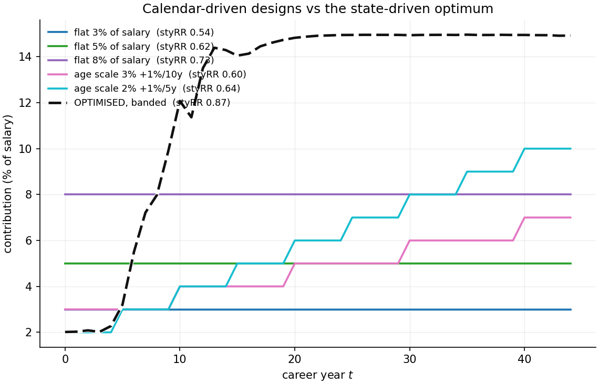
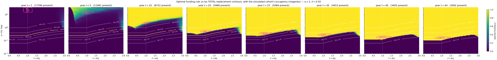
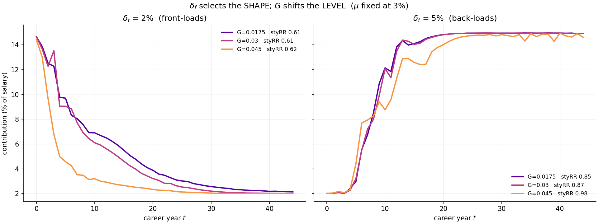
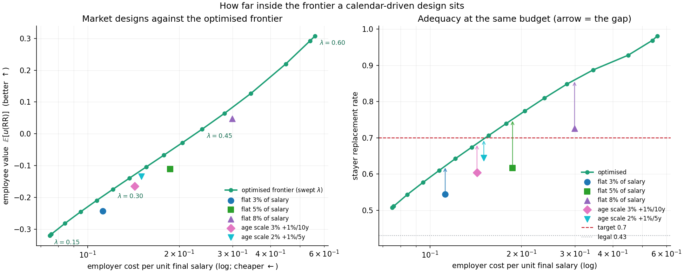
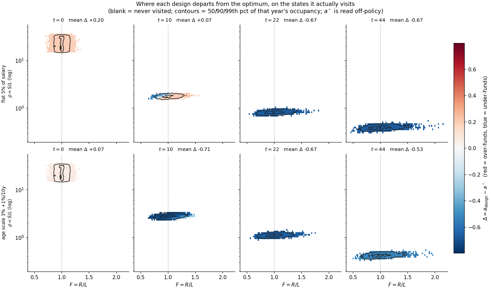
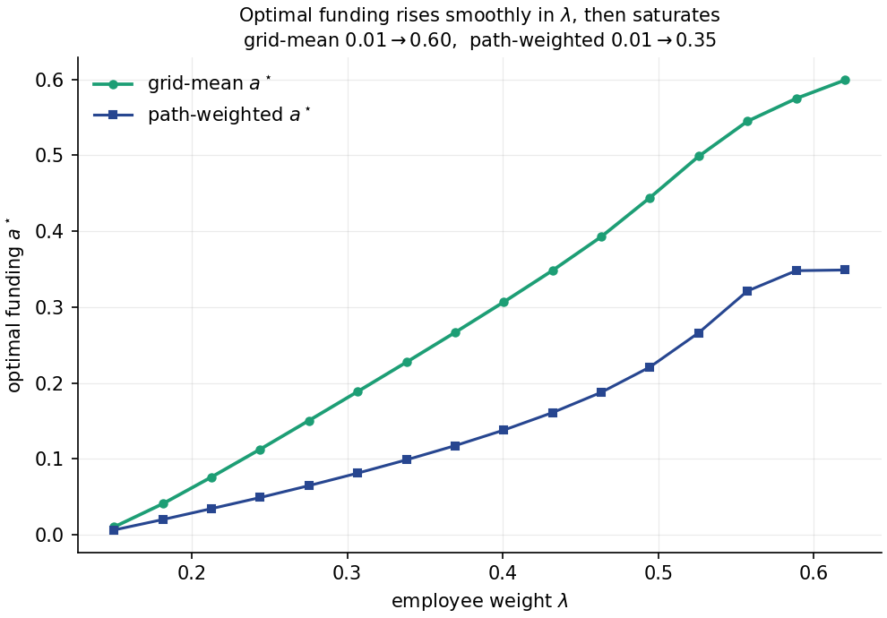
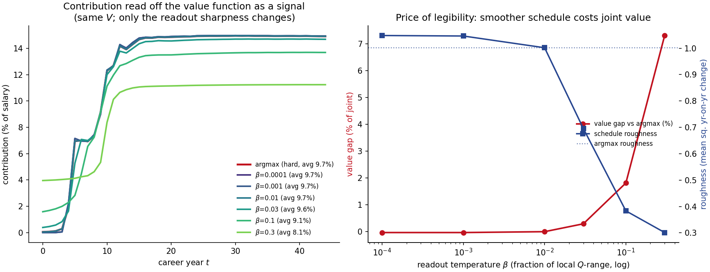

IN PROGRESS: Optimal Pension Design: A high dimensional take-away
In the following posts we will take the problem to the next level and consider the aspect of stochasticity and the inherent risks a pension plan faces.
The Issue at Hand
In the previous post on optimal pension design, we looked at a deliberately naive setup: a Monte Carlo agent decides each year whether or not to fund the pension plan, optimizing that binary action against a predetermined value function. It worked — but only because we had quietly stripped the problem of the thing that makes pensions hard in the first place: risk.
A real Belgian plan is stochastic on both sides of the balance sheet. On the asset side, a Branch 21 contract earns a guaranteed rate that the insurer resets over time, while a Branch 23 contract simply tracks the market return of its underlying investments. On the liability side sits the legal minimum return (WAP) — itself variable, pinned to the 10-year OLO rate. (These are distinct guarantees: the insurer's contractual Branch 21 rate and the statutory WAP floor need not coincide, and an insurer may credit above the floor.) None of this moved in our naive model: we fixed the rates on both sides and let the agent optimize in a world without surprises.
That simplification was not laziness — it was a modelling choice, and the reason has a name: the Markov property. More precisely, the Markov property relates to the information one needs to make a well-informed decision in the predetermined dynamics of the modelling world.
from last time: the objective, made recursive
The Markov property is a statement about information — how much of the past a decision needs in order to be made well informed. But a decision is always toward some objective, and before we can ask what information it needs, we should be clear about what it is optimizing. So let us recover the value function from the previous post and reshape it into something a solver in a stochastic modelling environment can actually work with.
Last time we scored an entire career with a single number — the joint value to employee and employer of a whole contribution path:
The employee is credited the discounted final benefit \(B_T\), weighted by \(\lambda\); the employer is charged the discounted stream of contributions plus the discounted cost of the guarantee shortfall, weighted by \(1-\lambda\). (Contributions run to the year before retirement: in year \(T\) the plan pays out rather than pays in.) It is the right thing to want. It is also the wrong shape to solve: one lump summed over the whole path, and you cannot optimise a path all at once when every year's decision reshuffles all the years after it. The fix is to make it recursive — a reward earned each year plus the value of everything still to come — without changing what it means.
First, name the employee's benefit. The guarantee says the employee walks away with the funded floor: the reserve if it cleared the liability, the liability if it fell short. So \(B_T = \max(R_T, L_T)\). Substituting, and collecting the two maturity terms over their shared discount factor,
Now \(V\) wears its structure openly: a terminal payoff settled at \(T\), and a flow of contribution costs spread across every year.
Second, chop the lump into per-year pieces. Call the reward earned in year \(t\) its discounted contribution cost, and fold the whole terminal payoff into the final year:
Then \(V = \sum_{t=0}^{T} r_t\) exactly — nothing has changed but the packaging. One feature will matter later: every reward is already discounted to today, the factor \((1+\delta)^{-t}\) living inside it. (From here we compound continuously, trading the compounding factor for an exponential rate purely for cleaner bookkeeping, so the discount reads \(e^{-\delta\,t}\). Later this single \(\delta\) splits into an employee rate \(\delta_e\) and an employer rate \(\delta_f\) — one per leg of the objective.)
Third, turn the sum of future rewards into a proper value function in Bellman's notation. Two forces require this notation. The returns are random and therefore demand an expectation; and we are trying to choose the contributions optimally, so we want the best attainable. But "best expected from here on" presumes a here — a description of where the plan stands when the decision is made. That description is the plan's balance sheet, \((R_t, L_t, S_t)\), which marches forward one year at a time as
reserve and liability each taking in this year's contribution \(c\) and then growing — the reserve at the credited rate \(\mu\) with its own asset shock \(\sigma_R z_R\), the liability at the guaranteed rate \(G\) with its own shock \(\sigma_L z_L\) (the WAP guarantee tracks the OLO, so it wobbles too), and salary deterministically at the wage rate \(W\). The two shocks \(z_R, z_L\) are independent standard normals. Define the value function \(V\) at time \(t\) as the best expected total of the rewards still to come, given that balance sheet,
and the definition folds in on itself: the rewards after this year, optimised, are just next year's value at wherever this year leaves you. That gives the Bellman equation,
The whole-career lump has become a one-year trade-off. And because each \(r_t\) was already discounted to today, no discount factor sits in front of the continuation — the discounting is already inside the rewards. (Sneak a \(\gamma\) in there and you would discount twice.)
So the objective is now solvable in principle — but only if we can describe the state \((R_t, L_t, S_t)\) it conditions on, and track how a decision moves it. That triple is three continuous numbers evolving at random, and this is exactly where the Markov property, teased above, comes into play. The next section is about dimensionality reduction — restructuring the value function to our advantage.
redefining the value function in high dimensional space
Start with what "fixed rates" actually bought us. In a world without shocks, if you tell me the calendar year, I can tell you everything else. The plan's assets, its liabilities, its funding position all follow a single deterministic path, so standing in year \(t\) pins down the entire state of the world. The year is the state. That is why the naive agent could get away with a value function that depended on nothing but \(t\): \(V(t)\) was genuinely all the information the decision needed.
Turn on stochasticity and that convenience evaporates. Now two plans that both reach year 20 can sit in completely different places — one comfortably in surplus, the other underwater — because their asset returns diverged along the way. The year no longer tells you where you are. To describe the state you need a second number: how well-funded the plan is.
The natural coordinate for "how well-funded" is the funding ratio,
reserves divided by liabilities. And \(F\) is not arbitrary bookkeeping — it is the one number the whole problem pivots on, because the employer's legal guarantee makes them short a put option struck at \(F = 1\). They have written the guarantee: above 1 the plan is fine and the option they wrote expires worthless; below 1 they owe the shortfall. The optimal decision differs on the two sides of that line, so the moment \(F\) can straddle it, \(F\) has to be part of the state.
The true state of the plan is really the triple \((R_t, L_t, S_t)\) — reserves, liabilities, and salary — a three-dimensional object evolving at random. Solving a control problem over a 3-D continuous state is a different sport from solving one over a single integer \(t\). In one modelling step we have jumped from a one-dimensional problem to a genuinely high-dimensional one.
The first thing we can claw back is a matter of scale: nothing in the decision cares about the absolute size of the plan. Double every salary and every reserve and you double the euros flowing through, but not the fraction of salary you should optimally contribute.
Make that precise. The claim is that the value function is homogeneous of degree one in the money level — scale reserves, liabilities and salary all by the same factor \(\kappa\) and the value scales by exactly \(\kappa\):
This is not an assumption we impose; it is forced by two properties of the primitives. First, every reward scales with the money level. The contribution is salary-linked, \(c = a\Gamma S\), so scaling salary scales the euros paid in; and the terminal payoff is built from \(\max(R, L)\) and \(\max(L - R, 0)\), each of which pulls a positive constant straight out — \(\max(\kappa R, \kappa L) = \kappa\max(R, L)\). Second, the dynamics preserve scale: begin a year \(\kappa\) times larger, take the same action, and every next-period quantity comes out \(\kappa\) times larger, because the transitions are linear in the money variables — the shocks sit in the exponent, on the rates, while the money enters only through the linear factor. Start the year at \((\kappa R, \kappa L, \kappa S)\), where the contribution comes out \(\kappa c\) because \(c = a\Gamma S\), and run the same transitions:
Those two facts propagate through the backward recursion that defines the value. At retirement the value simply is the terminal reward, so it scales by \(\kappa\). And if next year's value scales by \(\kappa\), this year's must too: the flow scales, the scaled state feeds a scaled next-year value, and the common \(\kappa\) factors out of the sum, out of the expectation, and out of the maximization — a positive rescaling never changes which action wins. Homogeneity holds at \(T\) and survives every step back to \(0\), so it holds everywhere. (Note the shocks are innocent here: scaling the money pulls a clean \(\kappa\) out for every realization of \(z_R, z_L\), because the money is linear and the shocks only ever multiply it.)
Homogeneity is a licence to choose the scale, so choose the one that normalises liabilities to one. Setting \(\kappa = 1/L\) pulls the level clean out of the function,
where the reduced function \(w_t\) has its liability argument frozen at \(1\) and so depends on just two numbers. The value has split into a size part and a shape part: \(L_t\) counts the euros, and \(w_t(F, \rho)\) is the value per unit of liability, carrying everything the decision actually turns on.
The liability level \(L\) just rescales the answer; it never changes which action is best, so it drops out of the decision. But notice what survives the split: not one ratio, but two. Alongside the funding ratio \(F = R/L\) we are left with a second,
the salary-to-liability ratio. Homogeneity removes the level, not the salary.
Why does \(\rho\) refuse to go away? Because the contribution is tied to salary. The premium is a fixed rate on salary, \(\Gamma S\), and each year the plan decides what fraction \(a \in [0,1]\) of that premium to actually fund, so the euros paid in are \(c = a\,\Gamma S\). The quantity that drives the dynamics, though, is the contribution measured against liabilities,
Read that carefully: the same action \(a\) bites differently depending on \(\rho\). A young plan whose salary base is large relative to its still-thin liabilities (\(\rho\) high) moves its funding ratio far with a given \(a\); a mature plan with liabilities that dwarf current salary (\(\rho\) low) barely moves at all. So \((t, F)\) genuinely underdetermines the problem — hand me the year and the funding ratio and I still cannot tell you what a contribution decision does, until you also tell me \(\rho\).
With both ratios in hand the dynamics close. Next year's funding ratio,
we derive from the reserve-and-liability dynamics we established in the earlier posts, as follows. Over one year each takes in this year's contribution \(c\) and then grows — the reserve at the credited rate \(\mu\) with its asset shock \(\sigma_R z_R\), the liability at the guaranteed rate \(G\) with its shock \(\sigma_L z_L\):
The funding ratio next year is simply their quotient, so divide the one by the other:
The two growth factors collapse into a single exponential that carries the drift \(\mu - G\) — the reserve out- or under-earning the guarantee — and the net shock \(\sigma_R z_R - \sigma_L z_L\). Notice the shocks enter as a difference: a good asset year pushes the funding ratio up, a good guarantee year (the liability growing faster) pushes it down, and only the gap between them moves \(F\). The euro ratio left in front becomes a funding-ratio expression once you divide top and bottom by \(L\) and recall \(\ell = c/L\):
which is exactly the expression above. Read it for what it says: the fraction \(\frac{F + \ell}{1 + \ell}\) is the part the plan controls — a weighted average of today's \(F\) and \(1\), pulled toward fully-funded by contributing — while the exponential is the part nature controls, drift and the two shocks, untouched by any decision. Contribution moves you deterministically; the market and the guarantee scatter you from there.
Not only does the funding ratio evolve; the ratio between salary and liabilities moves alongside it,
by the very same divide-through. Salary grows deterministically at the wage rate, \(S' = (1 + W)S\), while the liability follows the same \(L' = (L + c)\,e^{G + \sigma_L z_L}\), so their quotient is
where once more dividing the denominator by \(L\) turns \(L + c\) into \(L(1 + \ell)\) and leaves \(S/L = \rho\). And — the point of the whole exercise — both next-year ratios depend on nothing but today's \((F, \rho)\), the action, and fresh exogenous noise. That self-containment is precisely the closure a state variable must have.
Two remarks on \(\rho\) forestall confusion. First, it genuinely belongs in the state even though one might have hoped it would collapse: \(\rho = S/L\) is not a function of the year alone, because the denominator \(L\) depends on every contribution taken so far — two plans in the same year, having funded differently, hold different liabilities and different \(\rho\). Second — and this is new now that the guarantee is shocked — \(\rho\) is itself random: its update carries the liability shock \(z_L\) through \(L'\), so a surprising year for the guarantee moves the salary ratio too. What keeps \(\rho\) a single well-behaved state variable is that its evolution, like the funding ratio's, depends only on today's state plus fresh noise — the Markov closure holds. We do keep salary growth \(W\) deterministic, which spares us a third shock; the only randomness in the balance-sheet dynamics is the asset–guarantee pair \((z_R, z_L)\) — a departure hazard joins them, without adding a dimension, in a later section.
So here is the high-dimensional take-away, and it is more honest than the tidy version. Stochasticity costs us a dimension we never had to carry before, and the structure of the problem — scale-invariance and a self-contained pair of ratios — hands most of it back. But not all of it. We do not land on the one coordinate we might have hoped for, the funding ratio alone; the salary-linkage of contributions is precisely the feature that blocks that final collapse. We land instead on a value whose shape part takes two arguments,
year suppressed into the recursion, funding ratio and salary ratio the two shape coordinates the decision genuinely needs.
That two-coordinate reduction is real, but it was derived for the linear objective — and, as the next section shows, the linear objective is not quite the one we want. The reassuring news, which we will earn rather than assume, is that fixing it need not cost us the reduction at all. But the fix is subtle enough to deserve its own section, and it is where the funding decision finally becomes interesting.
putting curvature in: risk aversion over the replacement rate
Start with what the linear objective does to the decision. The employee benefit as written is linear in the money funded — and a linear objective has no interior trade-off. Every euro of funding is worth the same as the last, so the best contribution rule rails to a corner: contribute the maximum, always. That is not a modelling accident; it is what any objective with no curvature in how it values a marginal euro must give — a degenerate corner solution.
To make the funding decision genuinely interesting we must break that linearity — and there are two candidate ways, only one of which fits our problem. The familiar one is a funding-ratio target: reward the plan for keeping \(F\) near some chosen level. For a plan that controls its asset allocation — de-risking into bonds to defend the ratio, taking equity risk to grow it — that is exactly the right instrument, and it is why defined-benefit and glide-path models lean on it. But our agent has a single lever, how much to contribute, and a contribution is a remarkably weak instrument on the funding ratio. It enters reserve and liability symmetrically — the same euro is added to both \(R\) and \(L\) before they grow — so it can only dilute \(F\) toward 1, never drive it to an arbitrary target; and the quantity that actually swings the funding ratio, the drift and the two shocks, carries no contribution at all. Returns move \(F\); the agent does not control returns. Scoring the agent on the funding ratio would therefore ask it to hit a mark with a tool that barely moves it — and worst of all in exactly the states where you would most want to correct, since a bad return year opens a gap that another euro of contribution only dilutes away slowly.
The contribution's real leverage lies elsewhere, and that is where the curvature belongs. Every euro funded is moved from "expected shortfall the employer pays later" into "certain contribution paid now," and it lifts the employee's outcome directly. The decision is a financing-and-outcome trade-off, not a steer-the-ratio one — so we put the curvature on the outcome, which the action genuinely controls.
There is a choice in what outcome to be curved about, and it turns out to decide whether the reduction survives. The naive choice is a concave utility of the terminal euros, \(u(\max(R_T,L_T))\) with constant relative risk aversion (CRRA), \(u(x)=x^{1-\eta}/(1-\eta)\). It does break the degeneracy — the first euro of pension is worth more than the ten-thousandth, so a marginal benefit eventually crosses the marginal cost and the optimum turns interior. But it quietly wrecks the dimensionality. A utility of euros is homogeneous of degree \(1-\eta\), while the employer's euro costs are degree one; with the two legs scaling by different powers, the objective is homogeneous of no degree, the scale no longer cancels, and the liability level climbs back into the state as a fourth coordinate. Worse, adding utils to euros is dimensionally incoherent — it silently needs an exchange rate between a util of satisfaction and a euro of cost, an arbitrary constant with no principled value.
Both problems have the same cure, and it is not a patch but the right modelling choice: be curved about the quantity the employee actually cares about, which is not raw euros but the pension relative to final salary — the replacement rate. Define
the fraction of pre-retirement income the plan delivers, the number every pension system and adequacy debate is denominated in. Put the CRRA utility on that: \(u(\text{RR})\).
The employee has diminishing marginal utility of their replacement rate — the first thirty points of replacement matter far more than the points above seventy — which is exactly the risk aversion the lifecycle literature assumes, now in the units that literature uses.
And here the structure pays off. The replacement rate is a ratio of money quantities, so it is scale-free — and, being a ratio, it is already one of our coordinates:
The level \(L_T\) cancels. Utility over the replacement rate depends only on \(F_T\) and \(\rho_T\), and it is homogeneous of degree zero — invariant to the plan's size, not merely covariant with it. Measuring the employer's cost in the same numéraire — per unit of final salary, so a contribution counts as its fraction of final pay, \(a_t\Gamma\,S_t/S_T = a_t\Gamma\,(1+W)^{-(T-t)}\) — makes that leg degree zero too. With both legs scale-free and matched, the whole objective is homogeneous of degree zero, the scale cancels completely, and the value depends on nothing but the two ratios:
There is no size factor \(L_t\) in front, as there was in \(L_t\,w_t\) under the linear objective — the value is literally scale-invariant. So the curvature that makes the decision interesting costs us nothing in dimensionality: the level never returns, the state stays \((t,F,\rho)\), and the awkward exchange rate never appears, because two degree-zero quantities are already in the same units. The only price is \(\eta\), the coefficient of risk aversion — a standard, interpretable lifecycle parameter, not an arbitrary weight.
And the optimiser is no longer degenerate. The rule \(a^\star(t,F,\rho)\) is interior, and it reads through the replacement rate. At low \(\rho\) — liabilities large relative to salary, so the projected replacement \(\max(F,1)/\rho\) is comfortable — a marginal contribution buys little extra utility and the plan funds sparingly; at high \(\rho\) — the projected replacement is low, the outcome still on the steep part of the utility curve — funding easily beats its cost and the plan contributes fully. Fund hard when the projected replacement rate is inadequate, ease off once it is comfortable — the risk-averse-employee-versus-cost-conscious-employer tension, resolved state by state, in the currency of retirement adequacy. (We curve only the employee leg — a retiree has diminishing marginal utility of their replacement rate — and leave the employer's cost linear in money, since a firm values a euro of cost roughly linearly.)
So the state, and this time it really is settled, is \((t, F, \rho)\) — two coordinates, for the linear objective and the curved one alike.
three refinements, and the price of realism
That clean object — \(u(\text{RR})\) with \(\text{RR}=\max(F,1)/\rho\) — is only the skeleton of the employee's value. To make it a defensible model of Belgian adequacy rather than a stylised ratio we enrich the outcome in three data-anchored ways. Reassuringly — and this is worth checking rather than assuming, because the instinct is to expect otherwise — all three keep the value a function of \((F,\rho)\) alone and degree-zero homogeneous, so the clean two-coordinate reduction survives every one of them intact.
The pension is an annuity, not a lump. The capital \(\max(R_T,L_T)\) is not consumed in one year; it buys income across retirement. Converting through an actuarial annuity factor \(\ddot a\) — the mortality-weighted, discounted value of a lifelong €1/year, about \(15\) for a Belgian life expectancy at 65 near twenty years at a \(\sim\!2\%\) technical rate — the annual replacement rate is \(\max(F,1)/(\ddot a\,\rho)\). This is still a ratio, still scale-free; it rescales the outcome into the units adequacy is measured in, and it matters because an adequate annual pension takes roughly \(\ddot a\) times the capital of the same number as a lump.
The second pillar sits on top of the legal first pillar. A private-sector average earner already draws about \(\text{RR}_{\text{legal}}\approx 0.43\) from the statutory pension, so the quantity the employee cares about is the total, \(\text{RR}_{\text{total}} = \text{RR}_{\text{legal}} + \max(F,1)/(\ddot a\,\rho)\). It is worth pausing on why adding a constant is harmless for the reduction, because the instinct is that it must spoil something. It does not. Rescale all money by \(\kappa\): both \(F\) and \(\rho\) are unchanged, so \(\max(F,1)/(\ddot a\rho)\) is degree-zero; a constant is trivially degree-zero; and the sum of two degree-zero quantities is degree-zero. So \(\text{RR}_{\text{total}}\), and the value built on it, stays a function of \((F,\rho)\) alone and fully scale-invariant. (Contrast the euro-CRRA we rejected earlier, which added a term of a different degree — \(1-\eta\) against the costs' degree one — and that mismatch is what drags the level back into the state. A constant shares the ratio's degree zero and changes nothing.) What the legal baseline does change is real but benign: total replacement can never fall below 43%, so the employee is never on the near-vertical part of the CRRA and their marginal utility of second-pillar funding is finite and modest rather than explosive. That bounded marginal utility — not any lost homogeneity — is what makes funding a genuine trade-off against employer cost, and it is why, in the results, funding rises smoothly with the negotiation weight \(\lambda\) instead of being all-or-nothing.
Adequacy is measured against a target. A CRRA with no reference treats "adequate" as infinity; the employee actually has a target replacement rate — we take the OECD/EU benchmark of \(\text{RR}^\star \approx 0.70\) of final salary, total across pillars — and cares how far the plan closes the gap to it. Grounding the whole thing in the lifecycle literature (mortality-weighted CRRA over retirement consumption; Merton–Yaari–Bodie), the employee's value is the actuarial present value of the utility of annuitised consumption against target consumption \(c^\star=\text{RR}^\star S_T\). Under the deterministic annuity this collapses cleanly to
where \(\ddot a\) appears twice — as the survival-discounted count of retirement years over which consumption utility accrues, and inside the capital-to-income conversion — exactly the internal consistency the lifecycle formulation supplies for free. The utility is the normalised CRRA: it differs from the textbook \(x^{1-\eta}/(1-\eta)\) only by a constant, so it changes no decision, but it is pinned so that \(u(1) = 0\) and \(u'(1) = 1\) — "on target" is the natural zero, and at the target the slope is one. That slope, together with the factor \(\text{RR}^\star\ddot a\) in front, is what makes the employee leg money-metric: differentiate with respect to the pension capital and the \(\text{RR}^\star\ddot a\) cancels, so at the target one extra unit of capital per unit of final salary is worth exactly one unit — the same numéraire the employer's cost is measured in. The two legs of \(\lambda V_{\text{employee}} + (1-\lambda)V_{\text{employer}}\) are then commensurable without any hidden exchange rate, which is what lets \(\lambda\) be read as a pure negotiation weight. The employer's leg stays linear in money, a real euro of cost.
Employer and employee discount at different rates. One more piece is genuinely two numbers, not one. A single discount rate would conflate two different questions: how the employee values their future pension and how the employer values deferring cash. These are not the same rate. The employee discounts a future retirement income at a risk-free / OLO rate (we use 3%); the employer discounts its contributions and shortfall at its cost of capital (5%). So the objective carries a split: the employee leg is discounted at \(\delta_e\), the employer leg at \(\delta_f\), each to the same fixed date \(t=0\) (no per-period \(\gamma\) — the \(\gamma=1\) discipline still holds, now per leg). This turns the discount from a single free knob into two grounded numbers — though, as the results show, only one of them is a genuinely independent lever. The employer's rate \(\delta_f\), set against the credited return \(\mu\), decides when the plan funds. The employee's rate \(\delta_e\) turns out to decide nothing on its own: it only ever multiplies the employee leg by the constant \(e^{-\delta_e T}\), which is indistinguishable from a change in \(\lambda\).
This is the committed employee objective: specified once, from the lifecycle literature, against a stated and sourced target, with the first-pillar baseline and the annuity factor grounded in Belgian data. Everything below is read off it, not tuned into it. One assumption inside it is load-bearing and worth naming: the legal replacement rate is treated as a flat \(0.43\). Belgium's real first pillar is regressive — it replaces a smaller fraction of salary for higher earners — and modelling that would make \(\text{RR}_{\text{legal}}\) a function of the salary level, which is exactly the kind of term that would break degree-zero homogeneity and pull the salary level back in as a fourth coordinate. The flat baseline is the assumption that keeps the reduction clean; relaxing it is genuine future work, not a cosmetic detail.
when the worker can leave
Everything to this point has assumed the member stays with the plan for the full career. That assumption is doing more work than it looks, and it is worth relaxing inside the value function before we compute anything — because a worker who may leave changes what the terminal payoff even means.
Leaving is not a new state variable; it is a hazard on the horizon. Let \(h_t\) be the probability of leaving during year \(t\) — a deterministic function of tenure, so it adds no dimension. We calibrate it to Belgian job-tenure data (average tenure about eleven years, roughly half of workers staying ten years or more): a hazard of about twelve percent in the first years, decaying to a two-and-a-half-percent long-tenure floor, so around forty-five percent reach ten years and about fifteen percent a full career. The subtlety is the same one that kept \(\gamma = 1\) inside the reward: retention is not a discount factor to multiply onto the continuation. It is a branching of the future. With probability \(1 - h_t\) the member stays and the plan lands in \((F', \rho')\) under the in-force dynamics; with probability \(h_t\) the contract goes paid-up. Under the Belgian regime a paid-up contract is a specific object, and the thing to get right about it is an asymmetry between the two rates: one keeps running and the other stops. Contributions cease. The reserve goes on earning the insurer's credited return, now locked for the remaining term, so it compounds deterministically and with no further asset shock (\(R' = R\,e^{\mu}\)). The liability, by contrast, stops accruing the legal return altogether and freezes at its departure level (\(L' = L\)) — the WAP rate no longer applies to a member who has gone.
What does not disappear is the floor itself. The frozen \(L_\tau\) remains the benchmark the reserve is tested against at retirement, so the employee still walks away with \(\max(R_T, L_\tau)\) and the employer still owes any shortfall against it. The guarantee stops growing; it does not lapse. And reserves being immediately vested, the leaver keeps the contract outright. The recursion gains one blended term,
where \(\Phi^{(\tau)}\) is the value of a contract frozen by a departure in year \(\tau\): an actionless companion problem on the same \((F,\rho)\) grid, with no contributions and no further accrual on either side — but with the shortfall against the frozen floor still settled at retirement. Its own recursion runs
seeded at retirement by the stayer's terminal payoff with one substitution — the full target gives way to the service-pro-rated target of the next paragraph. (Only the full-career cohort \(\tau = T\) is seeded by \(v_T\) unchanged.)
Both branches pay \(\text{flow}_t(a)\) and both land at the same in-force \((F', \rho')\): a member leaving during year \(t\) still receives that year's contribution and that year's guarantee accrual, and the contract freezes only from \(t+1\). They worked the year, so they are funded for it.
Note what that recursion no longer has: an expectation. Freezing the contract freezes its risk as well as its cash flows. The liability stops moving, the credited rate is locked, and salary growth was deterministic all along — so both state coordinates simply roll forward, and nothing random happens to a paid-up contract between the freeze and retirement:
So \(\Phi\) is not a companion stochastic problem at all. It is a closed form: roll the two coordinates forward to \(T\) and evaluate the terminal payoff there, once, with no quadrature and no backward pass. The recursion above is the definition; this is the implementation, and it is a single function evaluation per point rather than a second value surface to store and interpolate.
This has an economic reading worth pausing on, because it is a real consequence of the Belgian paid-up regime rather than a modelling convenience. The employer's WAP exposure on a leaver is settled at the moment they leave: with \(F_T = F_\tau e^{\mu(T-\tau)}\) known at departure, whether the guarantee bites at retirement — and by how much — is already determined. An underfunded leaver either cures deterministically through the locked credited return or does not, and no subsequent market year can change the answer. All the genuine risk in the problem lives in the stayer branch; departure converts a risky position into a known one. Seen from year \(t\), of course, \(\Phi^{(t)}_{t+1}\) is still evaluated at a random \((F', \rho')\) — this year's shocks have yet to land. It is only from the freeze onward that the path is certain.
There is one thing to get right about the leaver, and it is a question of whose target the 70% is. The target is a full-career-with-this-employer promise, so a member who leaves after \(\tau\) years should never be funded toward, or judged against, the full 70% — only a full-career stayer should. So the leaver keeps their full vested pot (immediate vesting — we take nothing from them), but the objective judges that pot against a service-pro-rated target on the occupational gap,
so a full-career stayer (\(\tau = T\)) faces the full 70% while a short-tenure leaver faces a low bar their small pot easily meets. Only the occupational gap is pro-rated; the legal first pillar is not (it is earned across the whole career, not with this employer). The consequence for the decision is the point: because a euro funded early mostly reaches people who will leave, and they are now judged against a low pro-rated bar, the marginal value of funding the churn-heavy early years falls — the plan funds the members actually accruing toward the full target. This directly disciplines both over-funding of likely-leavers and the front-load. Mechanically the target is the only thing the cohort index changes: \(\Phi^{(\tau)}\) differs from \(\Phi^{(\tau')}\) in the seed \(\text{RR}^\star_\tau\) and in nothing else — same frozen dynamics, same deterministic roll-forward, and an employer shortfall that stays linear, in the same per-unit-of-final-salary numéraire as the stayer's.
This churn-aware value function — not a certain-tenure simplification of it — is the object every result below is computed against. The remaining question is how to compute \(v_t(F,\rho)\) over its two-coordinate state. That is the next section
the dynamic programming approach
We have the value function \(v_t(F, \rho)\) and dynamics that close. What we do not yet have is a way to compute it. The definition is circular in the way every sequential-decision problem is circular: the value of standing here depends on the value of standing everywhere you might go next, which depends on where you go after that. Dynamic programming is the standard escape from that circularity, and it works by refusing to solve the whole thing at once.
The escape hatch is the one place where the circularity breaks: the end. At retirement, year \(T\), there is no "next" — no more decisions, no more shocks to weather, just the payoff you collect. So the value at \(T\) is written down directly — the employee's committed lifecycle utility of total replacement against target, minus the employer's shortfall:
The employee term is the annuity-weighted CRRA of total replacement — legal first pillar plus the annuitised occupational pension — measured against the 70% target; the employer term is the WAP shortfall as a fraction of final salary, \(\max(1-F,0)/\rho\), linear. This is the stayer seed (full target); a leaver's paid-up \(\Phi^{(\tau)}\) uses the service-pro-rated target defined above. It depends on \(F\) and \(\rho\) — the legal baseline enters as a constant, not a new coordinate — and it is the seed of the whole computation.
From there we walk backwards. Suppose — the inductive wager — that we already know \(v_{t+1}\) everywhere, the value of standing in any \((F, \rho)\) one year from now. Then the value today is a single optimization: over each candidate contribution \(a\), weigh what it costs this year against where it leaves you next year, and keep the best.
Two terms. The cost: the employer's contribution this year, expressed as a fraction of final salary — it is \(a\Gamma\) of current salary, converted to final-salary units by the deterministic salary growth \((1+W)^{-(T-t)}\), and discounted to \(t=0\) at the employer rate \(e^{-\delta_f\,t}\). The continuation: the expected next-year value, averaged over both shocks and over the two ways the year can end — with probability \(1 - h_t\) the member is still in the plan and next year's decision is live, with probability \(h_t\) the contract is frozen and its value is the actionless \(\Phi^{(t)}_{t+1}\) of the previous section. There is no unit-conversion factor on either, because a scale-free objective carries no size term to rescale. The action \(a\) threads through all of it: it costs now, and through \(F',\rho'\) it steers where next year lands — for stayer and leaver alike, since the year's contribution is paid before the freeze.
And note what is absent: there is no discount factor multiplying the continuation. In the textbook Bellman equation you would see a \(\gamma\) there. We do not have one, on purpose, because we discounted every cash flow to a single fixed date \(t=0\) inside the rewards themselves — the \(e^{-\delta_f\,t}\) on the employer cost, and \(e^{-\delta_e T}\) / \(e^{-\delta_f T}\) on the two terminal legs. There is no leftover gap between periods for a \(\gamma\) to bridge (the \(\gamma=1\) discipline holds per leg). Slipping one in would discount twice.
That recursion, iterated from \(T\) down to \(0\), is the entire algorithm — in principle. In practice three things stand between the equation and a number, and each is a modelling decision in its own right.
The expectation is a two-dimensional integral, and we refuse to sample it. With both sides shocked, the continuation must be averaged over two independent draws — the asset shock \(z_R\) and the guarantee shock \(z_L\) — so the expectation is a double integral, \(\iint (\cdots)\,\phi(z_R)\,\phi(z_L)\,dz_R\,dz_L\) against two normal densities. The obvious move is Monte Carlo: draw many shock pairs, average. But this object is a benchmark — the ground truth a learned policy will be measured against — and a benchmark that jitters with its random seed is no ground truth at all. So we compute the integral deterministically, with Gauss–Hermite quadrature, as a tensor grid: a fixed handful of scenarios in each shock, combined into a grid with product weights,
Five nodes per axis is \(25\) evaluations — deterministic, seed-free, and far cheaper than a converged Monte-Carlo average. Five is enough because the integrand is smooth in the shocks: moving to seven nodes per axis (\(49\) evaluations) leaves every reported figure unchanged to the third decimal. The leaving branch barely adds to that, and it is worth being precise about how little: at each of those \(25\) landing points the backup also wants \(\Phi^{(t)}_{t+1}\), which by the collapse above is one evaluation of the terminal payoff at a deterministically rolled-forward point — no inner quadrature, no backward pass, no stored surface of its own. Nor does the cohort index multiply anything: the year-\(t\) backup only ever asks for \(\Phi^{(t)}\), one cohort, the one that leaves now.
It is worth seeing what that sum actually does, because the figure is the dynamic-programming principle in a single frame.
Two things the tidy lattice hides. First, the nodes are drawn on a square grid but do not land on one: each true position is \(\big(\tfrac{F+\ell}{1+\ell}\,e^{(\mu-G)+\sigma_R z_R-\sigma_L z_L},\ \tfrac{(1+W)\rho}{(1+\ell)\,e^{G+\sigma_L z_L}}\big)\), an exponential warp of the evenly-spaced shock grid — which is exactly why \(v_{t+1}\) must be interpolated at each landing rather than read off a stored cell. Second, the lattice is a genuine grid and not a line: two axes, one per shock. That two-dimensionality is not a modelling extravagance but a forced consequence, and it is the next thing to justify. One might hope to collapse the two shocks back into one: the funding ratio only ever sees their difference \(\sigma_R z_R - \sigma_L z_L\), which is itself a single normal. But the salary ratio \(\rho'\) carries \(z_L\) on its own — a second, independent combination — so the integrand genuinely lives in two dimensions and the grid cannot be reduced. Only if salary too were shocked would we need a third axis; holding \(W\) deterministic keeps the grid at two.
The state is continuous, so we lay it on a grid. \(v_{t+1}\) lives at every real \((F, \rho)\), but we can only store it at finitely many, so we tabulate it on a mesh and read values in between by bilinear interpolation, over the two axes. They are not treated alike, and that is the whole point of having kept \(F\). The funding ratio gets a fine, uniform grid with one node placement that is not negotiable: \(F = 1\) must sit exactly on it, because that is where the put kinks, and a grid that straddled the corner would round it off. Concretely, \(F\) runs from \(0\) to \(3\) in 73 even steps, so \(F = 1\) is a node. The salary ratio is log-spaced over 71 nodes from \(0.01\) to \(35\) — three and a half orders of magnitude, because a new plan starts with a salary base some twenty times its liability and a heavily funded career ends with the liability several times the salary. The floor is lower than it looks necessary for a reason: interpolation clips anything beyond the grid, and since replacement is \(\max(F,1)/(\ddot a\rho)\), clipping \(\rho\) from below silently caps the replacement rate the solver can see. An early grid that stopped at \(\rho = 0.3\) undervalued heavy funding by more than half. Interpolation in the \(F\) direction is kept linear, never curved: a smoother scheme overshoots at the kink, and \(F=1\) is precisely where we cannot afford to.
The action is continuous, so we search it directly — inside a band. Contributions are bounded to between 2% and 15% of salary: a plan that promises a contribution must pay at least something every year, and cannot pay more than its funding capacity \(\Gamma = 15\%\). In the units of the control that is \(a \in [2\%/\Gamma,\ 1]\). The \(\max\) over that interval is an optimization at every single grid point, every year. We do not trust a clever optimizer here, because the kink at \(F=1\) can break the smoothness such methods assume and quietly settle on the wrong contribution — and a benchmark that silently finds a local optimum would certify a flawed policy as correct. So we do the blunt, safe thing: try an even sweep of 20 candidate contributions across the band and take the best. The only error is the fineness of the sweep, which we can make as small as we like and, crucially, can report: doubling it to 41 candidates moves no headline figure by more than 0.001.
Reading the rule off the value: a hard or a soft choice. The backward pass leaves, at every state, a score \(Q(a)\) for each candidate contribution. Taking the best of them — the argmax — is the textbook policy, and it has a practical flaw: when two contributions score almost the same, the argmax jumps between them from one grid cell to the next, and the schedule inherits those jumps. So the rule is read off as a signal instead, a softmax-weighted average of the candidates,
where \(\Delta Q\) is the local spread between the best and worst candidate. Dividing by that spread makes the temperature \(\beta\) a relative number — the same \(\beta\) means the same sharpness everywhere, whatever the scale of the value function — and \(\beta \to 0\) recovers the argmax. Nothing about the objective changes: \(v_t\) is still the maximum, and \(\beta\) only decides how sharply the contribution follows it. We use \(\beta = 0.01\), which is sharp enough to be indistinguishable from the argmax in every reported figure; the results show what a larger \(\beta\) costs.
Put together, one backward step is: for every \((F, \rho)\) on the grid, run every candidate contribution through every shock-pair scenario; at each landing point blend the two futures the year can have — next year's tabulated value \(v_{t+1}\) with weight \(1 - h_t\), and the frozen contract's \(\Phi^{(t)}_{t+1}\), priced on the spot by rolling it forward in closed form, with weight \(h_t\) — then average those blends with the product weights, add this year's cost, and keep the best contribution. Repeat from retirement back to today. What falls out is not just the value \(v_0\) — the worth of a new hire, already averaged over every way their tenure might end — but, at every state and every year, the contribution that achieved it: the optimal funding rule \(a^\star(t, F, \rho)\) laid out in full, interior and adequacy-driven, as the utility demands.
There is one numerical price the curvature extracts, and it is worth stating plainly. A CRRA value function is sharply bent — more so the more risk-averse the plan, with interpolation error scaling like \((1-\eta)^2\) — and a grid resolves sharp curvature only when it is fine enough. A strongly risk-averse plan (\(\eta = 3\)) needs a markedly finer mesh than a moderate one (\(\eta = 2\)) for the same accuracy; on a coarse grid the value can be off by tens of percent. This is exactly what the grid-doubling check is for: refine the mesh, watch the value settle toward the Monte-Carlo cross-check, and read the remaining movement as the benchmark's error bar. The cost is real but controllable — and it falls on the oracle, not on the learner it exists to certify.
And the benchmark still earns its keep in a second mode. The same engine runs with the contribution rule held fixed to a given plan's actual policy rather than optimised, pricing any real plan on precisely the same grid. The gap between the two — what an existing plan is worth versus the risk-optimal contribution rule — is the number the whole apparatus exists to produce.
results
The oracle exists to answer three questions, in order. Does it compute what it claims to — does it return the answers we can work out without it? Given that, what does the risk-optimal contribution rule look like, and what shapes it? And what is that rule worth against the plans employers actually run? Everything below is computed on one protocol, so every number can be compared with every other.
calibration
| Parameter | Symbol | Value | Anchor |
|---|---|---|---|
| career length | \(T\) | 45 years | — |
| credited return (Branch 21) | \(\mu\) | 3.0% | at the money against the guarantee |
| WAP guaranteed rate | \(G\) | 3.0% | within the 1.75–3.75% statutory corridor |
| salary growth | \(W\) | 2.5% | — |
| asset / guarantee volatility | \(\sigma_R\), \(\sigma_L\) | 5% / 2% | — |
| funding capacity | \(\Gamma\) | 15% of salary | the top of the contribution band |
| contribution band | — | 2–15% of salary | minimum promise, capacity |
| employee / employer discount | \(\delta_e\), \(\delta_f\) | 3% / 5% | OLO rate / cost of capital |
| risk aversion | \(\eta\) | 2 | lifecycle literature |
| annuity factor | \(\ddot a\) | 15 | Belgian life expectancy at 65 |
| legal (first-pillar) replacement | \(\text{RR}_{\text{legal}}\) | 0.43 | private-sector average earner |
| total replacement target | \(\text{RR}^\star\) | 0.70 | OECD / EU benchmark |
| negotiation weight | \(\lambda\) | 0.5 | balanced |
| signal readout | \(\beta\) | 0.01 | indistinguishable from the argmax |
evaluation protocol
The rule is solved on the 73 × 71 grid with 20 candidate contributions and 5 × 5 quadrature nodes, then simulated: 15,000 careers of a new plan, each starting fully funded (\(F_0 \approx 1\)) with a small liability against salary (\(\rho_0\) between 15 and 34), each exposed to the tenure hazard, followed to retirement. The simulation is repeated over five random seeds, and every simulated figure is reported with its [min–max] range across them. (The solve itself is deterministic and needs no range.) Three outcomes are tracked:
- employer cost — the present value of contributions plus the terminal shortfall, per unit of final salary: 0.32 means the employer pays, in today's money, 32% of one final salary over the career;
- stayer RR — the median total replacement rate of members who stay the full 45 years;
- leaver RR — the same for members who leave before retirement, their pot paid-up.
Two market plans are priced on exactly the same protocol by holding the contribution to a fixed schedule instead of optimising it: a flat 5% of salary, and an age scale starting at 3% and rising one point every ten years. Their levels are illustrative placeholders chosen to bracket Belgian practice, not sourced plan data — the same caveat as in the previous post.
the checks that come first
Before reading anything off the oracle, it has to pass the cases whose answer is known without
running it. These play the role the indifference control neut2 played in the previous post.
| Check | Prediction | Result |
|---|---|---|
| \(\lambda = 0\): only the employer counts | fund the legal minimum — the band floor, every year | 2.0% every year · stayer RR 0.507 |
| \(\lambda = 1\): only the employee counts | fund to capacity — the band ceiling, every year | 15.0% every year · stayer RR 0.981 |
| \(\delta_e = 2\%\) at \(\lambda = 0.5\), against \(\delta_e = 3\%\) at the predicted equivalent \(\lambda = 0.6106\) | identical policies | schedules equal to \(10^{-13}\) |
| \(\sigma_R = \sigma_L = 0\) | same schedule; slightly lower replacement, the call \(\max(R, L)\) losing its option value | same shape · stayer RR 0.849 vs 0.873 |
All four hold. The third deserves a sentence of its own: it is a negative result, and it reshapes how the model should be read. It is covered under the rate comparisons below.
the optimum against the market plans
| Plan | avg contribution | early → late | employer cost | stayer RR | leaver RR | joint value |
|---|---|---|---|---|---|---|
| optimised (DP) | 9.9% | 4.4% → 14.9% | 0.320 [0.316–0.325] | 0.873 [0.872–0.875] | 0.446 | −0.108 |
| flat 5% of salary | 5.0% | 5.0% → 5.0% | 0.187 [0.185–0.189] | 0.617 [0.616–0.618] | 0.459 | −0.149 |
| age scale 3% +1%/10y | 4.2% | 3.0% → 6.5% | 0.143 [0.141–0.145] | 0.604 [0.603–0.605] | 0.449 | −0.154 |
Early → late: the average contribution over career years 0–9 and 35–44.
The optimum wins on joint value, as it must — it is the maximiser of exactly that objective, and a design that beat it would mean the two evaluation paths were not running the same model. What is informative is how it wins. It does not simply spend more; it spends late. The optimal schedule starts at the band floor, ramps to capacity around year twelve and holds there: 26 of the 45 years sit at the 15% ceiling and 5 at the 2% floor. Stayers retire at 0.873 — well past the 0.70 target, which is a point we return to. Leavers, meanwhile, retire at 0.446, barely above the 0.43 legal floor and slightly below what either market plan gives them. That is the back-loading at work: a member who leaves early has left before the money arrives.

benchmark_suite.py schedules.where the rule lives: the policy map
The optimal rule \(a^\star(t, F, \rho)\) is defined on the whole grid, and at every year it has the same shape: fund at capacity above a boundary in \(\rho\), fund at the floor below it. High \(\rho\) means salary is large against the liability built so far, so the projected replacement \(\max(F,1)/(\ddot a\rho)\) is low — fund. Low \(\rho\) means the projected pension is already comfortable — ease off. The boundary runs roughly along the iso-replacement contours, and it is nearly flat in \(F\) below full funding, which is what the marginal analysis predicts: at \(\mu = G\) a contribution lifts reserve and guarantee equally and leaves any shortfall untouched, so how far below the floor the plan sits barely changes the value of the next euro.
The more revealing picture is where the simulated careers actually go on that map. They occupy a thin ribbon: over the whole career, only 20% of the grid's cells are ever visited. From about year ten onward the cohort sits right on the boundary — the optimum funds just enough to hold the projected replacement there, no more. And because the careers sit where the rule is generous, the rule averaged over the states careers occupy (\(a^\star = 0.665\)) is well above its average over the whole grid (\(0.527\)). A policy's behaviour off the ribbon is never exercised, which is exactly the caution a learned policy will need: agreement with the oracle only matters where careers go.

contribution_schedule_suite.py policy.what sets the shape: three rate comparisons
One euro contributed at year \(t\) costs the employer \(e^{-\delta_f t}\), compounds in the reserve at \(\mu\) until retirement, and is valued by the employee at \(e^{-\delta_e T}\). The ratio of what the employee gains to what the employer gives up is
and the two terms do different jobs. The first is constant in \(t\): it decides whether funding is worth anything at all. The second is linear in \(t\): it decides when. A third comparison, \(\mu\) against \(G\), does not appear because it acts through the dynamics — it is the drift of the funding ratio, and so the moneyness of the guarantee. Each prediction can be tested by bracketing its sign.
The employer discount against the credited return sets the timing.
| \(\delta_f\) | ordering | early → late | avg | stayer RR |
|---|---|---|---|---|
| 2% | \(\delta_f < \mu\) | 10.2% → 2.0% | 6.6% | 0.614 |
| 3% | \(\delta_f = \mu\) | 7.9% → 6.9% | 7.5% | 0.707 |
| 5% (committed) | \(\delta_f > \mu\) | 4.4% → 14.9% | 9.9% | 0.873 |
The sign of \(\delta_f - \mu\) flips the schedule from front-loaded to back-loaded, with a flat schedule at equality — the frictionless case in which the timing of funding is irrelevant. This is the cleanest structural result in the model, and it corrects a tempting story: the back-loading at the committed calibration is not caused by workforce churn. Churn is present in all three rows. The discount wedge is what moves.

scenario_suite.py rates.The drift of the funding ratio sets the level — and, below the floor, the timing too.
| \((\mu,\ G)\) | \(\mu - G\) | early → late | avg | stayer RR |
|---|---|---|---|---|
| (1%, 3%) underwater | −2% | 2.0% → 15.0% | 7.2% | 0.765 |
| (3%, 3%) at the money | 0 | 4.4% → 14.9% | 9.9% | 0.873 |
| (5%, 1.75%) floating | +3.25% | 14.4% → 12.5% | 12.2% | 1.108 |
When the reserve out-earns the guarantee, early money compounds and the plan front-loads; underwater it waits. The gap alone is not the whole story, though: holding \(\mu = G\) and sliding both from 1% to 5% moves stayer replacement from 0.680 to 1.102 and turns the schedule from 2.0% → 15.0% into 14.8% → 7.7%. The level of the credited return matters in its own right, because it compounds the reserve over 45 years wherever the guarantee sits.
The employee discount is not an independent lever. \(\delta_e\) enters the objective only as the constant \(e^{-\delta_e T}\) on the employee leg, and scaling the whole objective by a positive constant never changes which contribution is best. So only the combination \(\lambda e^{-\delta_e T}/(1 - \lambda)\) is identified, and every \((\lambda, \delta_e)\) pair with the same value gives the same policy — the check table above confirms it to \(10^{-13}\). Moving \(\delta_e\) from 3% to 2% is exactly moving \(\lambda\) from 0.5 to 0.61; in this calibration that alone is enough to pin the schedule to the ceiling. Any figure that varies \(\delta_e\) is a \(\lambda\) figure with the wrong label.
what optimising buys
Sweeping \(\lambda\) and re-solving at each value traces the frontier of the best achievable cost–adequacy pairs. The market plans sit inside it, and the distance can be read two ways: what the optimum would spend to match a plan's adequacy, and what adequacy it reaches on the plan's budget.
| Plan | its cost | optimum's cost at the same stayer RR | its stayer RR | optimum's stayer RR at the same cost |
|---|---|---|---|---|
| flat 5% of salary | 0.187 | 0.110 (−41%) | 0.616 | 0.752 (+0.136) |
| age scale 3% +1%/10y | 0.143 | 0.105 (−27%) | 0.604 | 0.684 (+0.080) |
Both readings are interpolations between swept \(\lambda\) points. The frontier is concave, so a chord lies below it and every gain above is conservative — the true gap is at least this large.
The gain splits into two halves, and the split is the most useful finding for plan design. The age scale comes within a point and a half of the flat plan's adequacy (0.604 against 0.617) for about a quarter less (0.143 against 0.187): that saving comes from back-loading at all, which any calendar rule can do. The optimum then reaches the age scale's adequacy for another quarter less: that saving comes from making the contribution respond to the state — to how the plan is actually funded — which no calendar rule can. The optimum is not beating the market by contributing more; it beats it by contributing at the right time and in the right states.

benchmark_suite.py frontier.where the market plans go wrong
The difference between a market plan and the optimum can be localised. For a calendar-driven plan the contribution does not depend on \((F, \rho)\) at all, so the informative quantity is the gap
read on the states the plan's own careers visit — what it pays there, minus what the optimum would pay there. Weighted by how many careers are in each state:
| Plan | year 0 | year 10 | year 22 | year 44 | path-years over-funded |
|---|---|---|---|---|---|
| flat 5% of salary | +0.20 | −0.18 | −0.67 | −0.67 | 44% |
| age scale 3% +1%/10y | +0.07 | −0.67 | −0.67 | −0.53 | 25% |
\(\Delta\) is in units of capacity; multiply by \(\Gamma = 15\%\) for percent of salary — −0.67 is ten points of salary.
Both plans make the same mistake in opposite halves of the career. They over-fund at the start, when the optimum sits at the floor and most of the money reaches members who will leave; and later they under-fund by about ten points of salary, exactly when the optimum has moved to capacity — the flat plan from its third decade, the age scale already from its second, because at year ten its 4% is still well below the flat plan's 5%. The age scale's rising steps point the right way but climb far too slowly. (One caution: \(a^\star\) is read off-policy on these cells — the plans steer careers into states the optimum's own simulation may rarely visit. The rule is defined there, so the comparison is legitimate, but it is an extrapolation of the optimum, not an observation of it.)

benchmark_suite.py visitation.the negotiation dial
The frontier behind those numbers is doubly censored by the contribution band:
| \(\lambda\) | employer cost | stayer RR | |
|---|---|---|---|
| ≤ 0.15 | 0.075 | 0.507 | pinned at the 2% floor |
| 0.18 → 0.57 | 0.076 → 0.540 | 0.511 → 0.966 | the informative range |
| ≥ 0.60 | 0.562 | 0.979 | pinned at the 15% ceiling |
Within the band, \(\lambda\) is a remarkably wide dial: from one end to the other the employer's cost rises seven-fold and stayer replacement from 0.51 to 0.98. And it is a smooth one. An earlier reading of this model expected a threshold — the legal first pillar crowding out second-pillar funding until \(\lambda\) crossed some critical value. The measured curve has no such kink: the optimal funding rate rises smoothly and near-linearly in \(\lambda\), then saturates once the optimum reaches the top of the action range around \(\lambda \approx 0.6\). The first pillar lowers the marginal value of funding; it does not switch it off.

lambda_dial_suite.py threshold.specification choices, and the price of a smooth schedule
| Variant | avg | early → late | employer cost | stayer RR |
|---|---|---|---|---|
| committed (\(\eta = 2\), no satiation, \(\beta = 0.01\)) | 9.9% | 4.4% → 14.9% | 0.320 | 0.873 |
| stop rewarding above the target | 6.4% | 4.0% → 7.0% | 0.218 | 0.708 |
| log utility, \(\eta = 1\) | 11.7% | 8.5% → 15.0% | 0.396 | 0.921 |
| strong risk aversion, \(\eta = 5\) | 8.4% | 5.6% → 13.1% | 0.278 | 0.804 |
| hard argmax, \(\beta = 0\) | 9.9% | 4.4% → 14.9% | 0.320 | 0.874 |
| smoother readout, \(\beta = 0.1\) | 9.5% | 4.5% → 14.0% | 0.311 | 0.846 |
| smoothest readout, \(\beta = 0.3\) | 8.8% | 5.4% → 11.8% | 0.299 | 0.796 |
The overshoot is the objective, not a defect. A CRRA utility keeps rewarding replacement without limit, so an optimum that pushes stayers to 0.873 against a 0.70 target is doing what it was asked. Capping the utility at the target — satiation — lands stayers at 0.708, essentially on target, for a third less employer cost. Whether the plan should stop at "adequate" is a normative choice, and the model makes its price explicit rather than hiding it.
Risk aversion moves funding the way it should. Replacement falls monotonically in \(\eta\): at \(\eta = 1\) marginal utility decays as \(1/x\), slowly enough that overshooting the target keeps paying; at \(\eta = 5\) it decays as \(1/x^5\) and the plan stops funding sooner.
A smoother schedule has a measurable price. At \(\beta = 0.01\) the soft readout is indistinguishable from the hard argmax. Raising \(\beta\) smooths the schedule — its year-on-year roughness falls from 0.56 to 0.40 at \(\beta = 0.1\) and to 0.18 at \(\beta = 0.3\) — and costs joint value: 1.4% of the optimum at \(\beta = 0.1\), 5.6% at \(\beta = 0.3\). For an employer who values a predictable contribution line, that curve is the menu: how much optimality to give up for how much legibility.

contribution_schedule_suite.py signal.interpretation
Read together, the results say three things about the problem, and one about the method.
The optimal plan is a state rule, and its timing is a financing decision. The shape of the optimum is not something the model had to be coaxed into. Back-loading follows from one inequality: the employer discounts faster (\(\delta_f = 5\%\)) than the reserve grows (\(\mu = 3\%\)), so every euro deferred is cheaper in today's money than the return it forgoes. Reverse the inequality and the same model front-loads; equalise it and the schedule goes flat. Churn, the guarantee and the utility then decide how much, but not when. That separation matters for practice, because it tells an employer which of its numbers the funding calendar actually depends on: its cost of capital against its insurer's credited rate.
Most of the value of optimising is in when and where, not how much. Against the flat plan, the optimum reaches the same adequacy for 41% less; against the age scale, for 27% less. Roughly half of that gain is available to any plan that simply back-loads, and the other half needs the contribution to react to the plan's funding state. The market designs also miss in a characteristic way: over-funding the churn-heavy early years and under-funding the years in which careers actually accumulate their pension.
The adequacy question is a negotiation, and the model prices it. With no satiation, the optimum overshoots the target for stayers, while leavers retire barely above the legal floor under every plan. Neither is a defect of the solver. The first is what an unbounded utility asks for, and satiation removes it at a price the model states. The second is what a paid-up contract with a service-pro-rated target implies: a member who leaves early has accrued little, and nothing in this plan design can change that without paying for it. Where the plan should sit is exactly the choice \(\lambda\) encodes — and within the band it spans the whole range from the legal minimum to full capacity, smoothly.
The oracle is a benchmark, and it behaves like one. It returns the known answers at the corners (\(\lambda = 0\), \(\lambda = 1\)), it identifies the one parameter that is not independent (\(\delta_e\)), and its numbers barely move when the numerics are refined: seven quadrature nodes instead of five change nothing in the third decimal, 41 candidate contributions instead of 20 move no figure by more than 0.001, and doubling the grid moves stayer replacement by 0.001 and employer cost from 0.320 to 0.316. The one resolution-sensitive quantity is the early part of the schedule — 4.4% on the protocol grid, 4.0% on the doubled one — which is why schedule shapes are reported to one decimal and never compared across grids. A benchmark whose error bar is known is what the next rung needs.
summary
The dynamic-programming oracle solves the churn-aware, risk-averse funding problem exactly on the reduced state \((t, F, \rho)\) and passes the checks with known answers. Its optimal rule funds at capacity when the projected replacement rate is short and at the floor when it is comfortable. At the committed calibration that produces a back-loaded schedule — set by the employer's discount rate against the credited return, not by churn — that reaches the flat 5% plan's adequacy for 41% less and the age scale's for 27% less. The negotiation weight \(\lambda\) moves the plan smoothly from the legal minimum to full capacity, the employee's discount rate is only \(\lambda\) in disguise, and a smoother contribution schedule can be bought at a stated fraction of the optimum's value.
final thoughts
Every number in this post is reproducible, and the quickest way to build intuition for them is to move the inputs yourself. The DP oracle runs live in the Play Ground: set the economy, the negotiation weight, the contribution band, the signal readout \(\beta\) and the two market plans, and it re-solves the problem in a few seconds — the schedule, the policy map with the simulated careers on it, the frontier with the market plans placed against it, where those plans misfund, and the price of a smoother schedule. Setting \(\delta_f\) to 2% and watching the schedule flip is the fastest way to see the timing result above; setting the market plans to your own is the fastest way to see what optimising would buy them.
next steps
Three limits of this rung point to the next ones.
The rates are still constants. \(\mu\) and \(G\) are fixed numbers here, and the results show how much depends on how they compare. In reality the credited rate follows the insurer's book yield and the guarantee follows the WAP formula on the 10-year OLO — the Hull-White model from the earlier posts. With both stochastic, the three rate comparisons stop being parameters and become state variables: a plan can drift from front-loading to back-loading as rates move, and the timing condition switches between \(\delta_f - \mu_t\) and \(\delta_f - G_t\) each time a path crosses the guarantee. Carrying rates in the state costs dimensions the grid cannot afford.
Which is why the learner comes next. A grid in \((t, F, \rho)\) is feasible; a grid in \((t, F, \rho, r_t)\) and beyond is not. The plan from the previous post still stands: a policy-gradient learner (PPO) with a function approximator, trained on the same environment and checked against this oracle where the oracle can still be computed. The policy map above says where that check has to hold — on the thin ribbon of states careers actually visit, not on the whole grid.
And three modelling assumptions need data. The first pillar is treated as a flat 43%, while Belgium's is regressive — a salary-dependent legal rate would break the degree-zero homogeneity that keeps the state two-dimensional, and would have to enter the state in its own right. The market plan levels are placeholders that need sourcing before the "what optimising buys" figures can be quoted as representative. And the two-tier plan common in Belgium, which splits contributions at the social-security ceiling, is not scale-free, so it is left out until the ceiling can be carried as a further ratio.